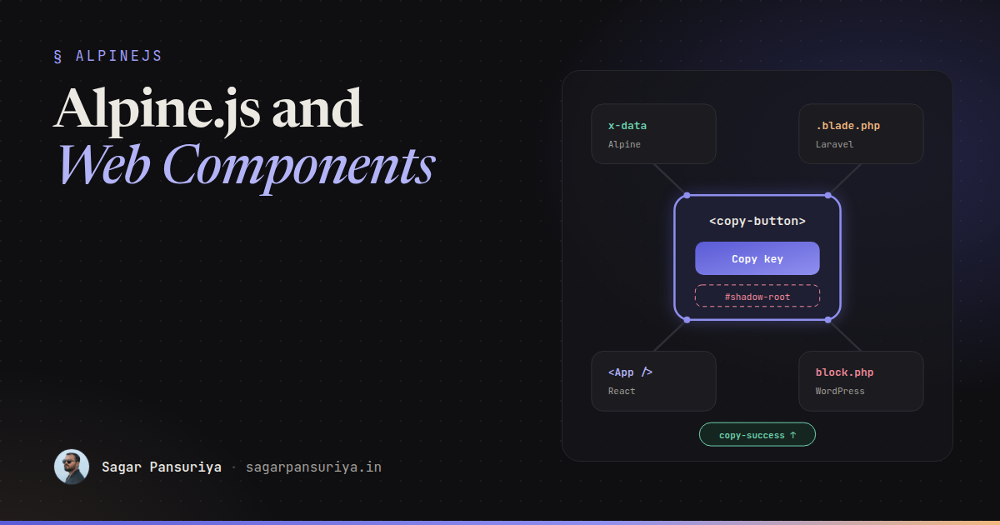

Alpine.js and Web Components: When to Reach for Custom Elements


Picture a small widget that everyone wants. A "copy to clipboard" button, say, or a relative timestamp that updates itself. Your Laravel app uses Alpine, the marketing site is on WordPress, the internal dashboard is React, and someone asks if the widget can look and behave the same in all three. You could write it three times. Or you could write it once as a custom element and let each stack use it like a normal HTML tag.
That's the question this post answers: when should an Alpine developer reach for Web Components, and how do the two work together without fighting? Short version: they're not competitors. Alpine is great at sprinkling state onto server-rendered HTML. Custom elements are great at packaging a widget so it works anywhere. Most of the interesting decisions are about the seams between them.
Two tools, two jobs
Alpine attaches behaviour to markup you already have. The state lives in x-data, the template is your Blade or PHP, and everything is scoped to one page's DOM. It's fast to write, easy to read, and deliberately light on ceremony.
A custom element is a class the browser knows about. Once you call customElements.define('copy-button', CopyButton), every <copy-button> on the page, now or added later, gets upgraded and runs your lifecycle callbacks. No framework needs to boot, and the element doesn't care whether it was rendered by Blade, a WordPress block, or JSX.
That gives a simple first filter:
- Page-specific behaviour (this form, this filter panel, this modal) belongs in Alpine.
- Reusable widgets that cross project or framework boundaries are good custom element candidates.
- Wrapping a third-party library (a chart, a map, a date picker) often fits a custom element too, because
connectedCallbackanddisconnectedCallbackgive you a clean place to set up and tear down.
Building a small custom element
Let's build <copy-button>. It enhances a real <button> you put inside it, copies its value attribute to the clipboard, reflects the result as a data-state attribute for styling, and fires events so the surrounding code can react. No shadow DOM for now; we'll come back to why.
// resources/js/elements/copy-button.js
class CopyButton extends HTMLElement {
connectedCallback() {
this.button = this.querySelector('button');
this.button?.addEventListener('click', this.copy);
}
disconnectedCallback() {
this.button?.removeEventListener('click', this.copy);
clearTimeout(this.timer);
}
get value() {
return this.getAttribute('value') ?? '';
}
set value(next) {
this.setAttribute('value', next);
}
copy = async () => {
try {
await navigator.clipboard.writeText(this.value);
this.dataset.state = 'copied';
this.emit('copy-success', { value: this.value });
} catch (error) {
this.dataset.state = 'error';
this.emit('copy-error', { error });
}
clearTimeout(this.timer);
this.timer = setTimeout(() => delete this.dataset.state, 2000);
};
emit(name, detail) {
this.dispatchEvent(new CustomEvent(name, { detail, bubbles: true }));
}
}
if (!customElements.get('copy-button')) {
customElements.define('copy-button', CopyButton);
}A few choices worth copying. The element name has a hyphen, which the spec requires. The button is real HTML inside the element, so before the JavaScript loads there's still a focusable, labelled button, just one that doesn't do anything yet. And the customElements.get guard stops a second import (easy to do with multiple Vite entries) from throwing.
Usage in plain Blade, styled with Tailwind's data attribute variants:
<copy-button value="{{ $apiKey }}" class="group inline-flex">
<button type="button" class="btn">
<span class="group-data-[state=copied]:hidden">Copy key</span>
<span class="hidden group-data-[state=copied]:inline">Copied</span>
</button>
</copy-button>Because the element lives in the light DOM, Tailwind classes apply normally. That's the main reason I default to light DOM for app widgets, which brings us to the trade-off.
Shadow DOM and Tailwind: the real trade-off
Shadow DOM gives an element its own encapsulated subtree. Styles from the page don't leak in, and the element's styles don't leak out. For a widget shipped to strangers' websites, that's exactly what you want. For an app styled with Tailwind, it's a wall: the utility classes live in your global stylesheet, and that stylesheet doesn't reach inside the shadow root.
What does cross the boundary:
- Inherited properties like
color,font-familyandline-heightflow in from the host. - CSS custom properties inherit too. If your design tokens are variables (Tailwind v4 exposes its theme values that way), the component can read
var(--color-primary)inside its own styles. ::part()lets outside CSS style specific internal elements the component chooses to expose with apartattribute.- Slotted content stays in the light DOM, so page styles still apply to whatever you pass into a
<slot>.
A small shadow DOM element that plays nicely with a Tailwind theme looks like this:
const sheet = new CSSStyleSheet();
sheet.replaceSync(`
:host { display: inline-flex; }
.badge {
padding: 0.125rem 0.5rem;
border-radius: 999px;
background: var(--color-primary, #5b5bd6);
color: white;
font-size: 0.75rem;
}
`);
class StatusBadge extends HTMLElement {
constructor() {
super();
const root = this.attachShadow({ mode: 'open' });
root.adoptedStyleSheets = [sheet];
root.innerHTML = `<span class="badge" part="badge"><slot></slot></span>`;
}
}
customElements.define('status-badge', StatusBadge);From the page, status-badge::part(badge) { … } can adjust it, and changing --color-primary rebrands it. That's a good API for a design-system component. It's a lot of friction for a one-off app widget, where you'd rather just write classes.
My rule of thumb: light DOM for things that live inside your own apps, shadow DOM for things you ship to pages you don't control, such as an embeddable widget a client pastes into their CMS.
Passing data in and getting events out
Custom elements have three ways to talk to the outside world, and mixing them up is where most bugs come from.

Attributes: strings, from HTML
Attributes are what the server can render. They're always strings, so they suit IDs, URLs, labels and flags. If the element needs to react when an attribute changes, list it in static observedAttributes and handle attributeChangedCallback.
Properties: rich data, from JavaScript
Arrays, objects and functions should be properties, not JSON crammed into an attribute. This matters with Alpine because x-bind sets attributes. :value="token" works on <copy-button> because the element reads an attribute. For a chart element that expects an array property, set it directly:
<div x-data="{ points: @js($points) }">
<sales-chart x-effect="$el.points = points"></sales-chart>
</div>x-effect re-runs whenever points changes, so the element always gets the latest array. Inside the element, a property setter can schedule a re-render.
Events: from the element back out
Elements report back with CustomEvent. Two flags matter: bubbles: true so ancestors can listen, and composed: true if the event starts inside a shadow root and needs to escape it. Alpine listens to custom events like any other:
<div x-data="{ inviteUrl: @js($inviteUrl), toast: '' }">
<copy-button :value="inviteUrl"
@copy-success="toast = 'Invite link copied'"
@copy-error="toast = 'Copy failed, select the link manually'">
<button type="button" class="btn">Copy invite link</button>
</copy-button>
<p x-show="toast" x-text="toast" role="status"></p>
</div>Stick to kebab-case event names. HTML attribute names are case-insensitive, so @copySuccess actually listens for copysuccess. Alpine's .camel modifier exists for this, but it's simpler not to need it.
Using Alpine inside a custom element
You can combine them the other way round, too: a light-DOM custom element whose children use Alpine. This works well when the element owns the lifecycle (lazy-loading a library, observing size or visibility) and Alpine owns the small bits of state in the markup.
<lazy-map lat="23.02" lng="72.57">
<div x-data="{ open: false }">
<button @click="open = !open" type="button">Show directions</button>
<ol x-show="open">…</ol>
</div>
<div data-map-canvas class="aspect-video"></div>
</lazy-map>Three rules keep this painless:
- Keep Alpine in the light DOM. Alpine walks the regular DOM tree and doesn't look inside shadow roots, so
x-datainside a shadow root simply won't initialise. - Don't let two owners fight over the same nodes. If the element renders into
[data-map-canvas], Alpine shouldn't touch that node, and vice versa. - Tell Livewire to leave it alone. If the element sits inside a Livewire component and manages its own children, add
wire:ignoreso a morph doesn't undo the element's DOM changes.
If you've written Alpine plugins before (I covered the basics in Alpine.js plugin development), you'll notice the overlap: a custom directive and a custom element can both wrap a library. The difference is portability. A directive only works where Alpine runs; the element works everywhere.
Avoiding the flash of an undefined element
Before customElements.define runs, the browser treats <copy-button> as an unknown inline element and renders its children as-is. For progressive-enhancement elements like ours that's fine. For elements that render their own content, hide them until they're ready with the :defined pseudo-class:
status-badge:not(:defined) {
visibility: hidden;
}Load element definitions from your main Vite entry, or import them only on pages that use them. Either way, register them once, as early as is practical.
A decision guide
| Situation | Reach for |
|---|---|
| State for one page or one Blade component | Alpine x-data |
| Shared state across components on a page | Alpine.store |
| Widget reused across Laravel, WordPress and React projects | Light-DOM custom element |
| Embeddable widget for pages you don't control | Shadow-DOM custom element |
| Wrapping a third-party library with setup and teardown | Custom element (Alpine for the state around it) |
| Design-system primitive that must look identical everywhere | Shadow DOM, themed with custom properties and ::part() |
The takeaway
- Alpine for page behaviour, custom elements for portable widgets. Using both is normal.
- Default to light DOM in your own apps so Tailwind keeps working. Use shadow DOM when isolation is the feature.
- Attributes for strings, properties for rich data (set them with
x-effect), events for everything coming back out. - Kebab-case event names,
bubbles: true, andcomposed: truewhen crossing a shadow boundary. - Keep
x-dataout of shadow roots, and addwire:ignorearound elements that manage their own DOM.
The nice side effect of building a few widgets this way is that they outlive your framework choices. The <copy-button> you write today will still work in whatever stack the next project uses, because it's just HTML.
Discussion